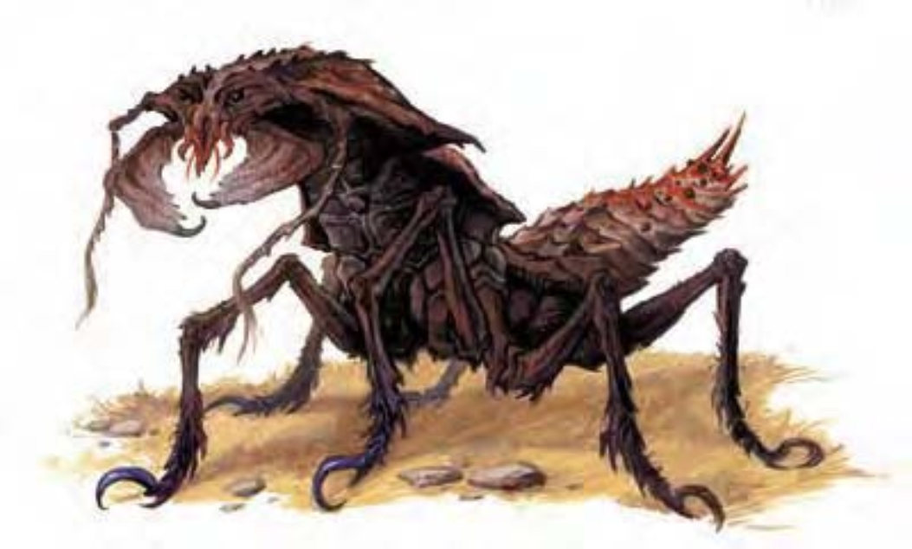

伴随一阵尘土，从地底冒出巨大而多节的虫。虫脚细长，末端连接了锐利的爪，坚硬的棕色角质壳覆盖全身，有力下颚上方的黑眼闪闪发光地向外瞪视着。
掘地虫是遁地怪物，嗜食鲜肉。掘地虫有六只脚，某些品种为黄色，而非棕色。掘地虫约10英尺长，800磅重。掘地虫用脚和爪钻洞。遁地时，掘地虫可使用正常速度的一半移动，但此状况下钻出的通道无法重复使用。掘地虫通常以上述方式移动。除此之外，掘地虫也有能力构筑可重复使用的通道。他们会在森林或农地的肥沃土壤下方构筑弯曲通道，最深可达40英尺。通道高度和宽度均约5英尺，长度60英尺至150英尺不等 ([1d10+5]x10)。通道通往掘地虫睡眠、进食、蛰伏的暂时巢穴。
掘地虫偏好鲜肉，但也吃腐坏的有机物。饿坏的掘地虫可能攻击农夫，但这些生物构筑的通道可帮助土壤通风排水，其排泄物也可充当肥料，对农地相当有益。
| 资料栏位 | 掘地虫 (Ankheg) 大型魔法兽 |
|---|---|
| 生命骰 | 3d10+12 (28HP) |
| 先攻 | +0 |
| 速度 | 30英尺 (6格)、遁地20英尺 |
| 防御等级 | 18 (-1体型、+9天生)、接触9、措手不及18 |
| 基本攻击/擒抱 | +3 / +12 |
| 攻击 | 啮咬+7近战 (2d6+7附加1d4强酸) |
| 全力攻击 | 啮咬+7近战 (2d6+7附加1d4强酸) |
| 占用/触及 | 10英尺 / 5英尺 |
| 特殊攻击 | 精通擒抱、吐酸 |
| 特殊能力 | 黑暗视觉60英尺、昏暗视觉、颤动感知60英尺 |
| 豁免 | 强韧+6、反射+3、意志+2 |
| 属性 | 力量21、敏捷10、体质17、智力1、感知13、魅力6 |
| 技能 | 攀爬+8、聆听+6、侦察+3 |
| 专长 | 警觉、健壮 |
| 环境 | 热带平原 |
| 组织 | 单独或聚集 (2-4) |
| 挑战级数 | 3 |
| 宝藏 | 无 |
| 阵营 | 总是绝对中立 |
| 进化 | 4HD (大型) ; 5-9HD (超大型) |
| 等级修正值 | ― |
掘地虫通常蛰伏于地面下方5至10英尺处，以触毛侦测猎物。一旦发现，他们就钻出地面攻击（视为冲刺，然而掘地虫无须先移动10英尺才能攻击）。
聚集的掘地虫分享领地，但不互相合作。多只掘地虫攻击时，会各自擒抱不同的目标。若目标数量不够，掘地虫会争抢拉扯同一目标。
精通擒抱（特异）：当掘地虫啮咬到对手时，即可利用即时动作进行啮咬攻击（视为擒抱），且不会引发对方借机攻击。如果啮咬后受到伤害，则掘地虫会以行走速度（而非遁地速度）退回洞穴，并将猎物一并拖回。
吐酸（特异）：掘地虫每6小时可以喷出一道30英尺长直线状的酸液。任何被喷到的生物将遭受4d4点强酸伤害，通过反射检定（DC=14）则伤害减半。这招绝技将消耗掉掘地虫6小时的酸液存量，使它在这段期间内无法再吐酸。豁免DC的调整值与体质调整值相同。
除非感到绝望或挫折，否则掘地虫不会使用这项能力。他们常在生命值降到一半以下或啮咬对手失败时选择吐酸。